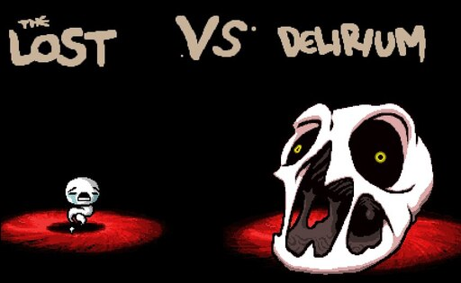
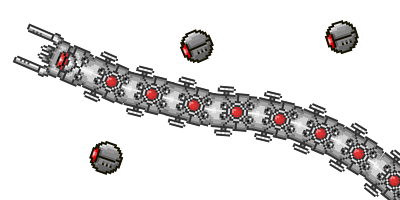

I play a lot of Isaac, almost everyday even if just a little. I have over 650 hours in the game. I'm still pushing to unlock everything, a little over halfway done. Recently I got an unlock that I've been trying to get for a while. Beating the hardest boss while only taking one hit. Beating Delirium as the Lost.

Terraria is another favorite of mine. I've really been getting into it recently. Previously I would get onto a world, get close to hard mode, and lose interest. I play on master mode (the highest difficulty) because I feel like that's how the game should be played. Master mode also unlocks some extra items so you can get everything in the game. Hard mode as it states is hard, most enemies have over 1000 health, some upto 12000! I can't wait to see the horrors the await me for the future.
New World is a game that came out a few weeks ago so it's pretty new. I've been playing quite a bit, probably less than I should. I'm waiting to be able to transfer my character into the world that my friends are in, but the function isn't available yet. I use a war hammer and spear as my weapons, I put most almost all of my points into strength. I do a lot of damage but I'm a bit fragile, so I gotta dodge good. I can't wait to find more cool items and quests to do.